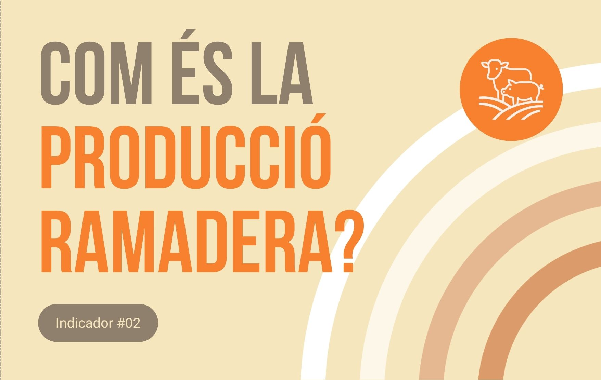

Arxiu d'infografies
Totes les infografies
dels Indicadors
Aquí trobaràs totes les infografies del projecte: dades sobre el sistema alimentari català des de la perspectiva de la sobirania alimentària.
search

Cóm es la producció agrícola
Ecosistemes
Anàlisi de biodiversitat en zones de pastura.
Aigua Viva
Gestió eficient dels recursos hídrics.
Farratge Alpí
Mapa interactiu dels cultius de farratge d'alta muntanya.
Pastures
Evolució de les pastures comunals i la seva gestió.
Conques
Visualització de conques i xarxa hídrica de muntanya.
Clima
Impacte climàtic a la biodiversitat i el rendiment.
Collita
Dades de collita en temps real a les parcel·les.
Regadiu
Sistemes de regadiu sostenible a alta muntanya.
No s'ha trobat cap projecte amb aquests criteris.